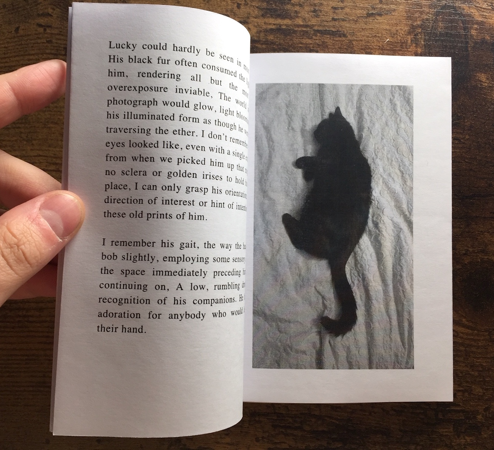
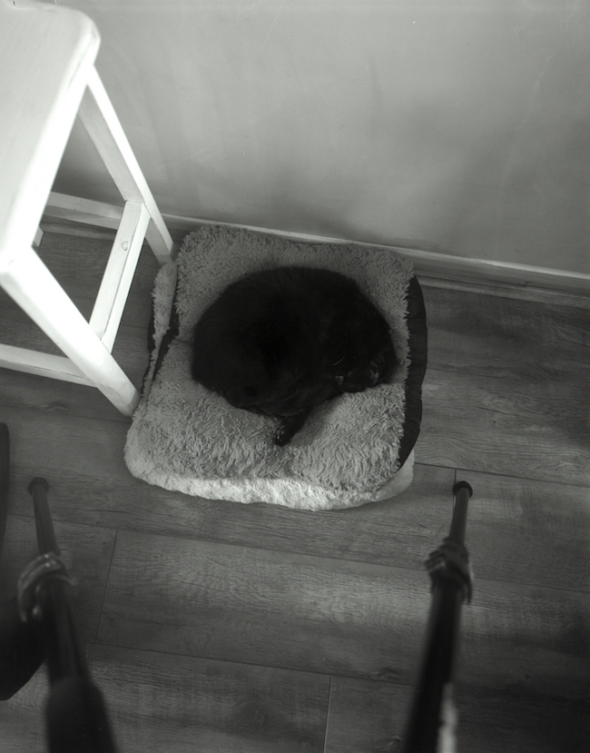
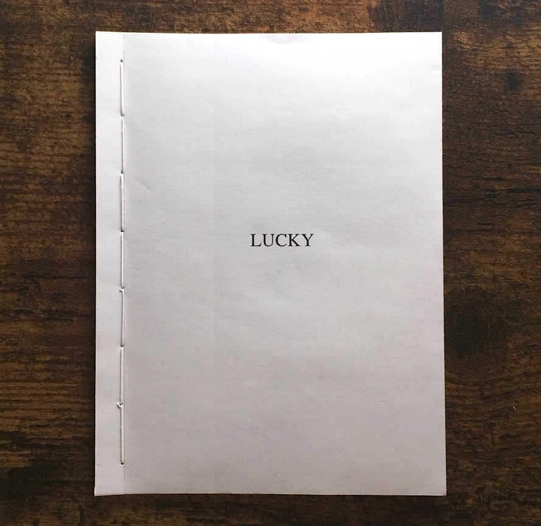

This is a very short pamphlet about my cat, Lucky. I might make more copies than just the dummy, but for now, here are 1 or 2 excerpts from the book.

When they go blind, some cats regress back to a more kitten-like stage. Lucky slowly lost his
vision over a number of years. First,
he suffered a loss to an unknown assailant shortly
after taking a light hit from a car one
halloween. The eye almost bisected, we found
him sitting on the stairs in silence following a
few days' absence.

Lucky could hardly be seen in most pictures,
His black fur often consumed the light around
him, rendering all but the most extreme
overexposure inviable. The world inside the
photograph would glow, light blooming around
his illuminated form as though he were a shade
traversing the ether. I don't remember what his
eyes looked like, even with a single extant print
from when we picked him up that night.
...I
watched and felt him
slowly limpen as the
sedative overwhelmed his system, shut down
his lungs, black fur gently squashing into the
cold metal, presumably some tiny degree of
body heat transferring
onto the surface...

Back to Top